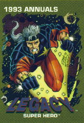

|
|
r Information About
Since there
are many versions of Captain Marvel. So we only adopted the last among the
line of Captain Marvel's legacy. First appearance: SILVER SURFER ANNUAL #6 Real name:
Genis-Vell
Height: 6' 2" History: On Titan, after the Kree warrior, Captain Mar-Vell died, Elysius, his love, conceived a child using Mar-Vell’s genetic code and her own. She called him Genis-Vell. For his safety, he was taken to an isolated world with his mother. He was also artificially aged to adulthood and given an implanted memory, where he thought Eros (Starfox) was his father. When he discovered his true identity, he left, taking on the name Legacy and baring the Nega-Bands worn by his father. He later fully took on his role as Captain Marvel, when Photon, then named Captain Marvel, passed the title on to him after he fought alongside the Avengers. Later, though, his bands were taken away, because Mentor did not feel he was mature enough for them. Some time after that, though, his mother died. A reanimated corpse of his father killed her. The murder was initially blamed on Drax, but, with the help of Adam Warlock, it was found that a villain named Siphon was to blame. In the experience, Genis received his bands back, so he could help solve the mysterious death of his mother. Most recently, Genis found himself transported to earth, as his atoms now switch with those of Rick Jones in the aftermath of the Destiny War. The two are now on earth, when one is in the flesh, the other is in the Negative Zone, but can still communicate with the other. Besides being bound with Rick Jones, Genis’s appearance has also changed, identical to that of his future self seen in Avengers Forever, and now has cosmic awareness, but has a hard time controlling it. In Avengers Forever, we also learn that Genis and Rick are bound together, and that Rick has a fling with Songbird, currently on the Thunderbolts, both of whom become Avengers.
|